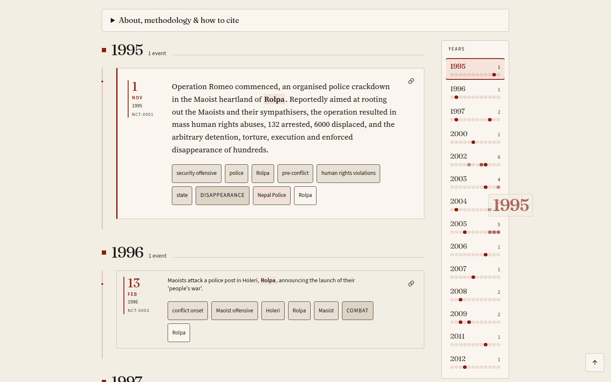

Digital archive · 1995–2026
Nepal Conflict Timeline
An open-source, chronological archive of Nepal’s internal armed conflict (1996–2006) and its transitional-justice aftermath — built for the people who need the record to be right.


Why it exists
Built for transitional justice
- Researchers, journalists, victims’ groups, and legal teams need a shared, trustworthy chronology
- Answers: what happened, when, where — with the source attached
- Restrained by design: brief non-graphic narratives, a content-blur option, no sensational styling
From spreadsheet to site
One sheet in, one site out
- No database, no backend, no router — a single page that later fits in a native shell
- Every push runs tests, data checks, build, and deploy
Where the first row is
Rolpa, not a heatmap
Operation Romeo, November 1995, is NCT-0001. The live demo searches this district. The highlight is a locator — counts of events are on the chart, and they are inferred, not surveyed.


Tour (~3 min live)
The timeline leads
- Year-grouped feed on a spine; sticky year rail, bottom dock on phones
- One Filters toggle: themes, categories, organizations, districts, confidence, date range, saved views, export
- Cards: teaser → expand → sources, confidence, and a permalink
https://arjankc.github.io/conflict_timeline/
Demo script: search Rolpa → step through matches → open Filters → toggle a district → copy a card permalink.

Why you can trust it
Trust is a feature
- Stable
Event_IDs (NCT-0001…NCT-2150) — links never rot when rows are added - Every expanded card shows Sources & Confidence, with the rationale behind the rating
- One canonical taxonomy:
Maoist/andMaoist.merge at parse time, never by editing history
Rigor, automated
The build checks the facts
data-lintasserts 11 doc claims (row counts, categories, confidence split, span) — docs can’t silently driftlink-check: 116 source URLs verified — 104 ok, 6 blocked, 6 dead with per-event remediation- War story: day-first dates (
18 April 2011) weren’t parsed — 1,793 rows sat in “Undated” until a regression-guarded fix
From the committed sheet
What 2,150 rows look like
Same date parser as the site. Fifty-four rows stay undated and are not drawn as bars. The shaded band is 1996–2006.
1995 · 1 1996–2006 · 947 2007–2026 · 1,148 Undated, not plotted · 54
Category, one per row
Inferred districts, top 8
Keyword and detail text, the same inference as the site — not a location field. Rolpa, the demo search, is 15th (30). Confidence on the archival sheet: 1,167 high · 351 medium · 632 low.
Design honesty
What we label, not hide
- Districts are inferred (keywords → detail prose) and labeled as such — no fake choropleth
- 54 rows stay Undated with an on-page explanation instead of invented dates
- Blur toggle, print stylesheet, forced-colors support: the archive adapts to the reader
What’s next — invitations
Open, on purpose
- True choropleth — needs a geojson decision
- Nepali UI — needs translations + review
- Per-year share images — needs a design asset
- Sheet fixes — NCT-0002 split, org commas,
otheraudit (editors only) - Data license confirmation
- Everything else on the plan is built and green

After the accord
The hall the later rows pass through
The war ended in November 2006. The Constituent Assembly, and the years after it, are why the sheet does not stop there.
Birendra International Convention Centre, Kathmandu, 2011 · Tevaprapas (เทวประภาส มากคล้าย) · CC BY-SA 3.0

Take it with you
Share & contribute
- Cards: link icon copies a filter-free permalink to a single event
- Views: Share button copies the filtered URL (
?tag=&year=) - Repo:
github.com/arjankc/conflict_timeline— schema inDATA.md, fact-check log indocs/FACTCHECK.md
One thing to remember
The war ended in 2006. The record runs to 2026.
2,150 events. Every one sourced, none invented. Thank you.
Sources for the pictures
Credits
- Liwang, Rolpa — Kashiram Dangi, 2019. CC BY-SA 4.0. Hotlinked from upload.wikimedia.org (1,920px, and 3,840px on large screens).
- Rolpa district locator, 2015 boundaries — NordNordWest. CC BY-SA 3.0 DE. SVG hotlinked from upload.wikimedia.org. A locator, not an event map.
- Thabang, Rolpa — Sahilkashi, 2009. CC BY-SA 3.0. Original file hotlinked from upload.wikimedia.org.
- Birendra International Convention Centre — Tevaprapas (เทวประภาส มากคล้าย), 2011. CC BY-SA 3.0. The photographer asks to be notified of use outside Wikimedia. Hotlinked from upload.wikimedia.org.
- App screenshot — Nepal Conflict Timeline, this repository, searching
Rolpa. Committed because it has no other host. The interface is MIT; the event texts are compiled research and are not MIT.
Wikimedia Commons serves these files from upload.wikimedia.org and allows hotlinking. Thumbnail widths are ones Commons accepts (1,920 and 3,840). Chart counts were taken from public/data/mastersheet.csv and the archival sources sheet with this site’s date, category, and district parsers: 2,096 dated rows (1 in 1995, 947 in 1996–2006, 1,148 in 2007–2026) and 54 undated. Confidence is 1,167 high, 351 medium, 632 low.